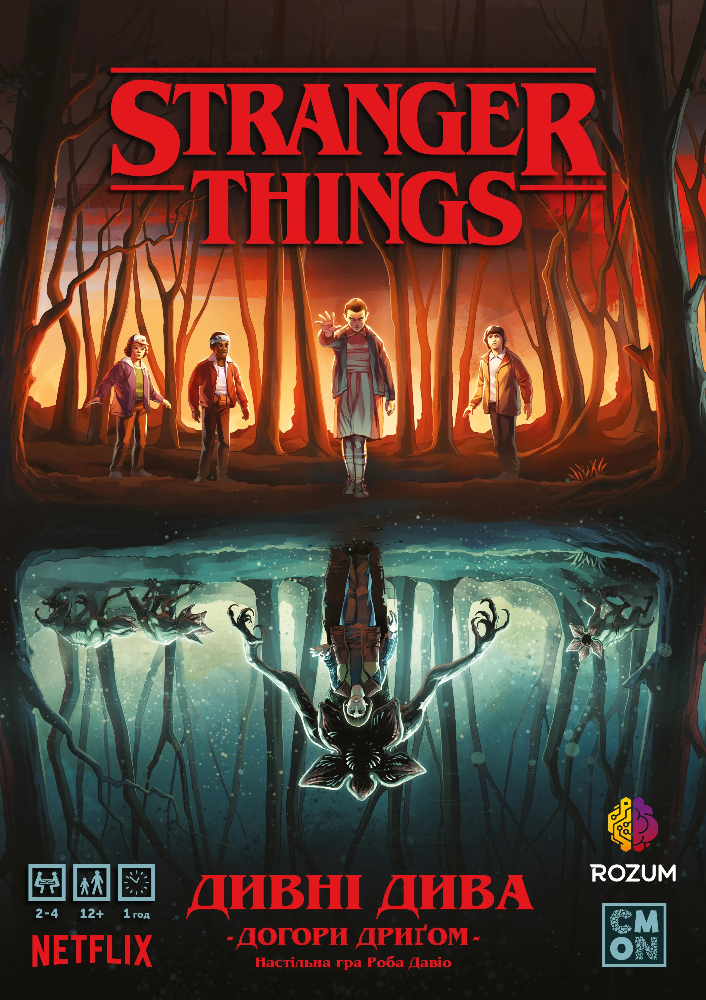
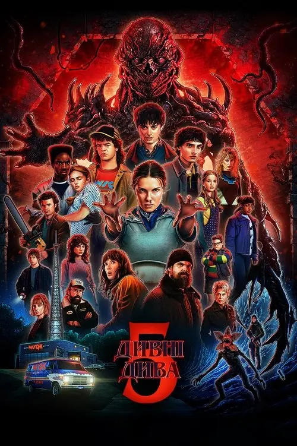

сюжет серіалу
Все починається з загадкового зникнення хлопчика на ім’я Вілл Баєрс. Його друзі — Майк Вілер, Дастін Гендерсон і Лукас Сінклер — починають власне розслідування. Під час пошуків вони зустрічають дивну дівчинку з надздібностями — Одинадцять (або Ел). Вона може рухати предмети силою думки та має зв’язок із таємничим паралельним світом — «Догори дриґом» (Upside Down)
всі герої
- Одинадцять (Ел)
- Майк Вілер
- Дастін Гендерсон
- Лукас Сінклер
- Вілл Баєрс
- Макс Мейфілд
- Підлітки
- Ненсі Вілер
- Джонатан Баєрс
- Стів Гаррінгтон
- Робін Баклі
- Едді Мансон
- Аргайл
- Біллі Харгроув
- Томмі Хаган
- Керол Перкінс
- Кріссі Каннінгем
- Джейсон Карвер
- Патрік Маккінні
- Родини
- Джойс Баєрс
- Джим Гоппер
- Карен Вілер
- Тед Вілер
- Голлі Вілер
- Еріка Сінклер
- Сьюзен Мейфілд
- Ніл Харгроув
- Клаудія Гендерсон
- Чарльз Сінклер
- Сью Сінклер
- Союзники
- Мюррей Бауман
- Боб Ньюбі
- Сем Оуенс
- Калі Прасад (008)
- Алексій
- Юрій Ісмаїлов
- Дмитро Антонов
- Персонажі лабораторії
- Мартін Бреннер
- Пітер Баллард
- Генрі Кріл
- векна Кріл
- Віктор Кріл
- Аліса Кріл
- Жителі Гокінса
- Барб Голланд
- Скотт Кларк
- Флоренс
- Філ Каллахан
- Ларрі Клайн
- Трой Волш
- Джеймс Данте
- Бенні Гаммонд
- Російські персонажі
- Григорій
- Озеров
- Михайло
- Монстри
- Демогоргон
- Демодог
- Мислитель розуму
- Векна
- Демокажани
